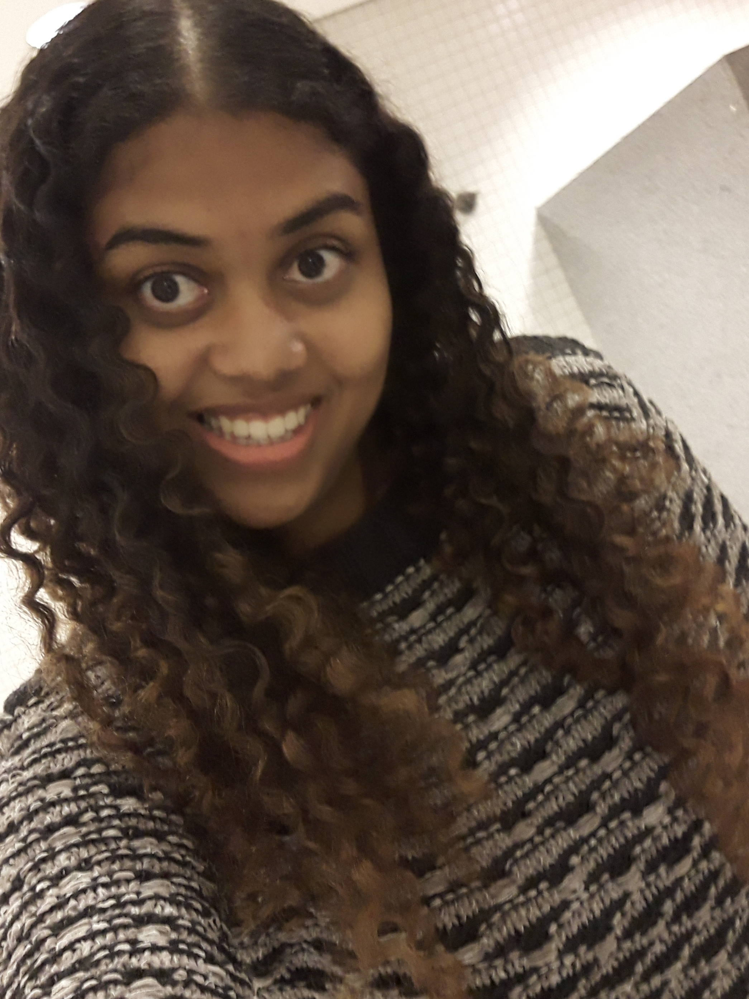

News COVID XIX
Olá, tudo bem?

Me chamo Mara e sou estudante de Sistemas de Informação e adoro programação :). Meus projetos tendem mais a serem na área de frontend mas recentemente venho explorando algumas tecnologias como Node.js e também estudado a criação de aplicativos. Na área de backend tenho experiência com Java, C e Python. Gosto bastante de ir a encontros sobre novidades na área de tecnologia, principalmente se forem sobre frontend.
Acesse meu Linkedin:
 Mara Tamiris
Mara Tamiris
Mara Tamiris